Серия фотографий, сделанная 5 марта 2006
на Селливановом острове, где произошли
события, описанные в рассказе Эдгара
По "Золотой жук". Вот как рассказывает
известный американский писатель об
этом острове:
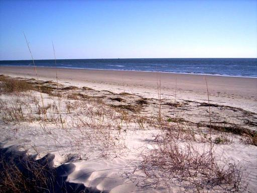
" Это очень странный остров. Он
тянется в длину мили на три и состоит
почти что из одного морского песка.
Ширина его нигде не превышает четверти
мили.
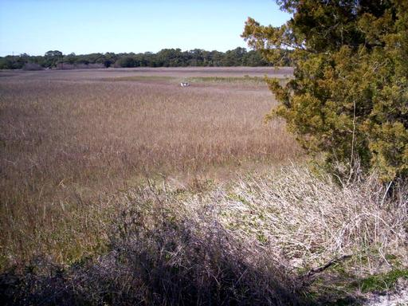
От материка он отделен едва заметным
проливом, вода в котором с трудом
пробивает себе путь сквозь тину и
густой камыш - убежище болотных курочек.
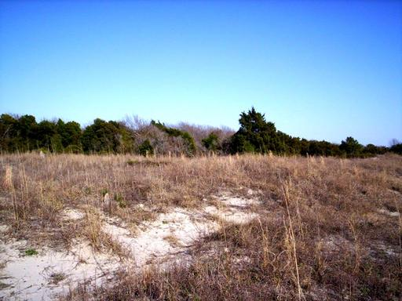
Деревьев на острове мало, и растут
они плохо. Настоящего дерева не встретишь
совсем.
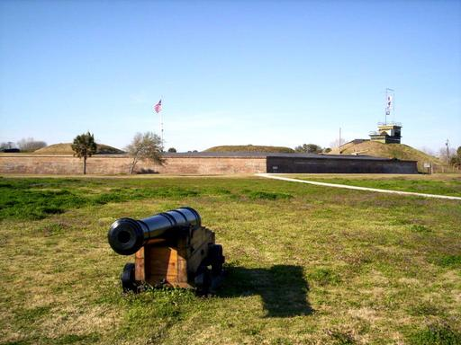
На западной оконечности острова, где
возвышается форт Моултри...
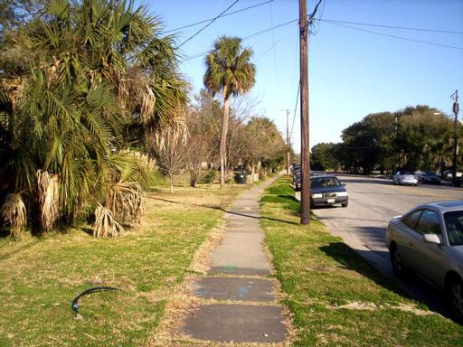
и стоит несколько жалких строений,
заселенных в летние месяцы городскими
жителями,
спасающимися от лихорадки
и чарлстонской пыли,...
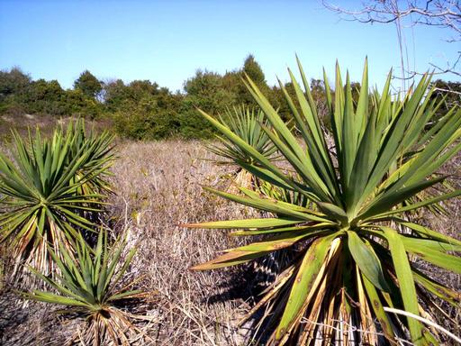
можно увидеть колючую карликовую
пальму.
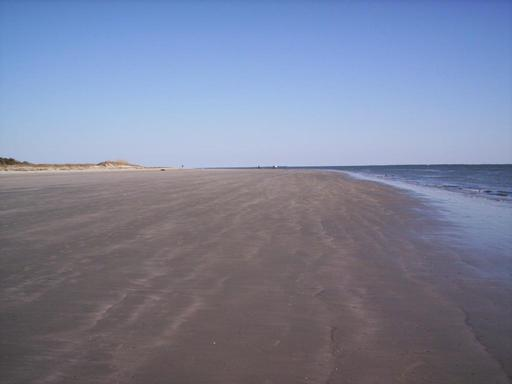
Зато весь остров, если не считать
этого мыса на западе и белой, твердой
как камень, песчаной каймы на взморье,...
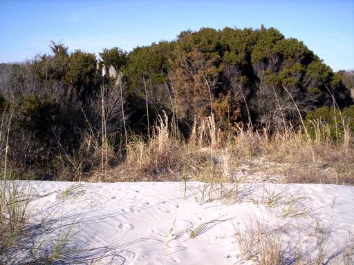
покрыт частой зарослью душистого
мирта, столь высоко ценимого английскими
садоводами. Кусты его достигают нередко
пятнадцати - двадцати футов и образуют
сплошную чащу, наполняющую воздух тяжким
благоуханием...
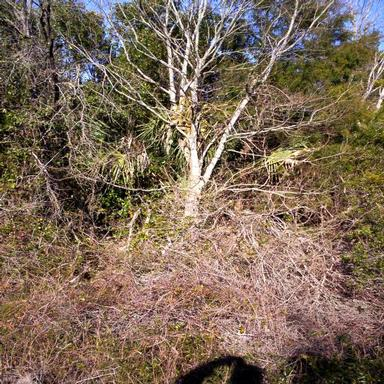
и почти непроходимую для человека.
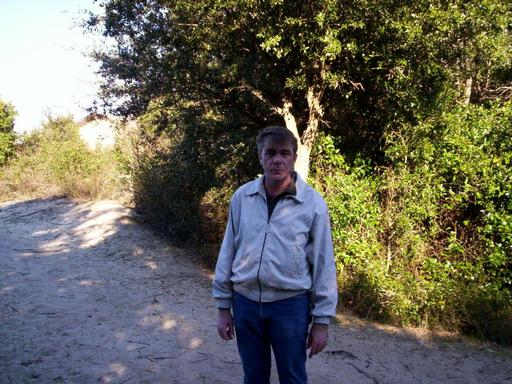
В сокровенных глубинах миртовой чащи,
ближе к восточной, удаленной от материка
оконечности острова, Легран соорудил
себе хижину, где и обитал..." Конец
цитаты.
На снимке - не Легран, а я. Как
видите описание острова соответствует
действительности. Впрочем По умолчал
про еще одну особенность миртовых
зарослей -
жуткие кактусы, несущие
угрозу одежде, обуви и здоровью. Ну,
расскажу еще про этот остров.
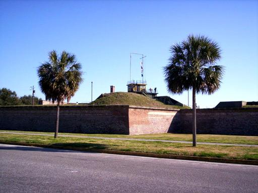
Форт Моултри, в котором Эдгар По служил
солдатом, первоначально был постоен из
пальмовых стволов и сыграл важную роль
в войне на независимось. С тех пор на
флаге Южной Каролины появилась пальма.
То есть мы видим, что "настоящие
деревья" в районе форта когда-то были.
Просто ко времени По их не осталось. Да
и теперь большие дикорастущие пальмы
на острове почти не встречаются.
Форт
утратил военное значение на рубеже
21-го века и превратился в музей, хотя
небольшой гарнизон еще есть. Здесь
недалеко приземлился воздушный шар из
другого рассказа "История с воздушным
шаром"
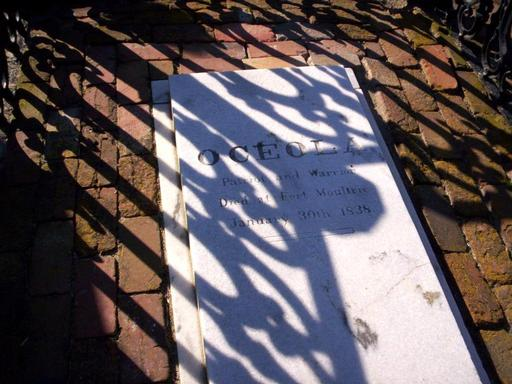
Примечательная могила с внешней
стороны крепостной стены. Надпись
говорит: "Оцеола, патриот и воин. Умер
в форте Моултри 30-го января, 1838."
Почему-то забыли пояснить, что легендарный
вождь умер от простуды, будучи заключенным
в казематах форта.
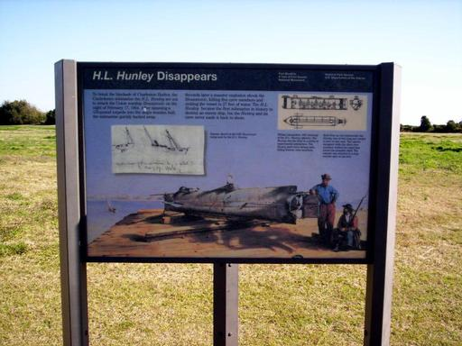
Отсюда, от форта Моултри пустилась в
последнее плаванье подводная лодка
"Ханли", о чем свидетельствует вот
эта табличка. Подробнее об этой
замечательной подлодке можно прочитать
в моем очерке "Команда лейтенанта
Диксона".
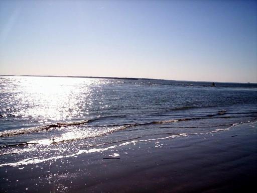
Вид с острова на чарльстонскую
бухту. Где-то там, в поле зрения объектива
и исчезла лодка "Ханли". Потребовалось
почти 140 лет чтобы ее обнаружить. В
центральной части снимка видна черная
полоска, почти сливающаася с противоположным
берегом. Это островок, на котором стоит
Форт Самтер. Гражданская война в Америке
началась на нем. А еще бухта известна
тем, что тут, прямо на глазах у города
Чарльстона, пират Черная Борода грабил
торговое судно. Этот пират стал праобразом
Флинта
в романе Стивенсона "Остров
Сокровищ". Вот он какой Сэлливанов
остров. Немного, наверное, на Земле мест,
со столь богатой и интересной историей.